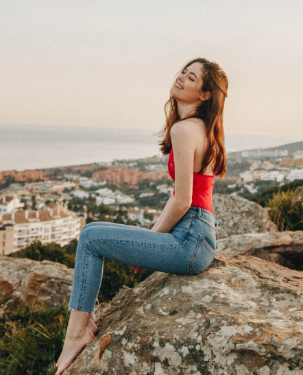

Идея и женщина
Womazing была основана в 2010-ом и стала одной из самых успешных компаний нашей страны. Как и многие итальянские фирмы, Womazing остаётся семейной компанией, хотя ни один из членов семьи не является модельером.
Мы действуем по успешной формуле, прибегая к услугам известных модельеров для создания своих коллекций. Этот метод был описан критиком моды Колином Макдауэллом как форма дизайнерского со-творчества, характерная для ряда итальянских prêt-a-porter компаний.